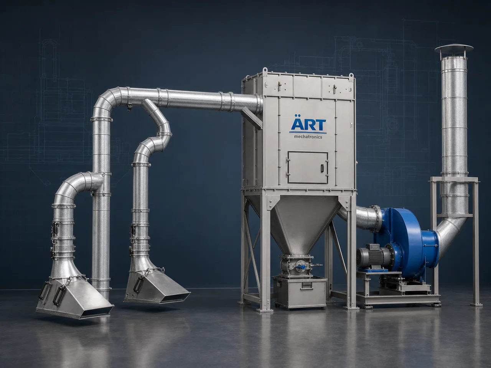

Industrial Dust Extraction System (Dust Extractor, Dust Extraction Unit & Air Pollution Control Solution)
A Dust Extraction System is an essential industrial air pollution control solution designed to capture, extract, and filter dust, fumes, and airborne particles directly from the source of generation.

About the Dust Extraction System
These systems play a critical role in maintaining clean air, safe working conditions, product quality, and regulatory compliance across industries.
Dust extraction systems are widely used in manufacturing plants, food processing units, pharmaceutical industries, chemical plants, woodworking units, metal fabrication, cement plants, and powder handling operations.
ART Mechatronics provides high-performance dust extraction systems engineered for efficient dust removal, energy optimization, and long-term industrial use.
One machine, many names
Buyers search for this equipment under many terms — we manufacture all of them:
Working Principle of Dust Extraction System
Dust is generated from processes such as:
Dust is captured using:
Prevents dust from spreading
Dust-laden air is transported through:
Dust is separated using:
Ensures high-efficiency dust removal
Collected dust is discharged through:
Filtered air is safely released or recirculated.
Types of Dust Extraction Systems
Industries Using Dust Extraction Systems
🍃 Food & Agro Industries
- Spices, flour mills, rice mills
- Snacks, coffee, tea
💊 Pharma & Nutraceutical
- Powder handling
- Tablet production
🏭 Metal & Fabrication
- Welding, cutting
- Grinding operations
🏗️ Construction & Cement
- Cement plants
- Sand & stone processing
⚗️ Chemical & Industrial
- Chemicals, detergents
- Powder coating
🪵 Wood & Furniture Industry
- Wood cutting, sanding
♻️ Plastic & Recycling
- Granules, pellets
Features & Advantages
- High-efficiency dust extraction (up to 99%)
- Cleaner and safer working environment
- Improved product quality
- Compliance with pollution control norms
- Reduced equipment wear
- Energy-efficient operation
- Customizable design for all industries
Technical Highlights
- Airflow Capacity: Custom designed (CFM based)
- Filtration Type: Bag / Cartridge
- System Type: Centralized / Localized
- Dust Discharge: Hopper / Rotary Valve
- Construction: MS / SS
- Automation: PLC-based control (optional)
Turnkey Dust Extraction Solutions
ART Mechatronics offers:
- Complete system design
- Ducting layout engineering
- Equipment manufacturing
- Installation & commissioning
- After-sales service & AMC
Why Choose Art Mechatronics
- Expertise in industrial dust control systems
- Customized solutions for every application
- High-efficiency filtration technology
- Robust and durable equipment
- Proven performance across industries
Applications
- Industrial Manufacturing Plants
- Food Processing Units
- Pharma Plants
- Chemical Processing Units
- Metal Fabrication Units
Get pricing & specs for the Dust Extraction System
Share the product, target capacity, current process and plant location. These details help our engineers discuss the right machine or line configuration.
One partner, from design to start-up
ART Mechatronics designs, manufactures, installs and commissions your Dust Extraction System solution with regional presence in India, UAE and Thailand.